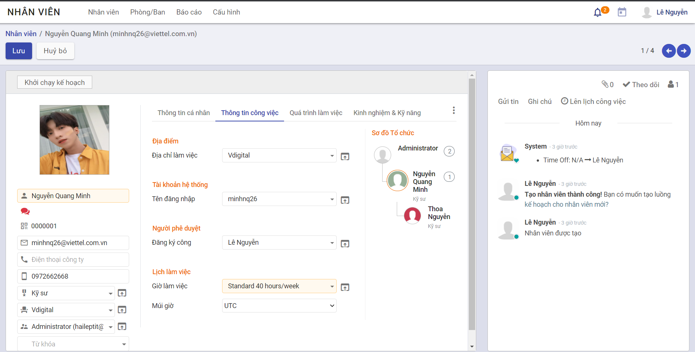
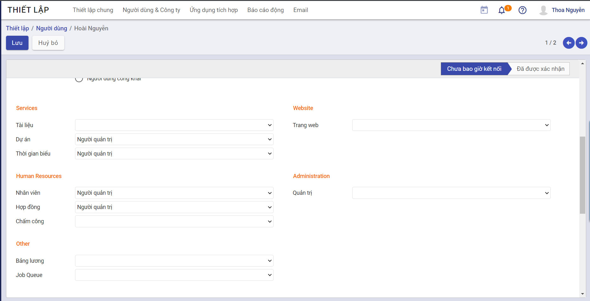

Thiết lập và khai báo ban đầu
Việc thiết lập và khai báo ban đầu được thực hiện khi lần đầu cài đặt hệ thống, giúp khởi tạo dữ liệu và bắt đầu cho việc thực hiện các nghiệp vụ phân hệ Digital workplace
Thiết lập ban đầu
Đối tượng thực hiện: Quản trị hệ thống
Việc thiết lập ban đầu được thực hiện ngay tại thời điểm tạo tài khoản cho nhân viên: Đây là điều kiện cần có và bắt buộc để có thể đăng nhập được vào ứng dụng của phân hệ Digital workplace
Luồng nghiệp vụ chính
-
Cài đặt ứng dụng. Chi tiết tại đây
-
Tạo tài khoản cá nhân. Chi tiết tại đây.
-
Khai báo thông tin nhân viên. Chi tiết tại đây.
-
Gán tài khoản cá nhân với nhân viên. Chi tiết tại đây.
-
Phân quyền cho từng tài khoản cá nhân. Chi tiết tại đây.
Gán tài khoản cá nhân với nhân viên
Các bước thực hiện
-
Vào phân hệ Nhân viên, tìm kiếm nhân viên cần cập nhật thông tin tại màn hình Danh sách nhân viên
-
Tại phần Thông tin công việc, nhấn nút Sửa
-
Tại Tài khoản hệ thống/ Tên đăng nhập: chọn tài khoản cá nhân tương ứng
Sau đó nhấn Lưu 
Phân quyền cho từng tài khoản cá nhân
Các bước thực hiện
-
Vào phân hệ Thiết lập, chọn Người dùng > Quản lý người dùng
-
Chọn vào Tên người dùng bất kì
-
Nhấn nút Sửa
-
Chọn các quyền tương ứng cho từng chức năng. Sau đó nhấn nút Lưu
Ví dụ: Dự án: Chọn Người quản trị
